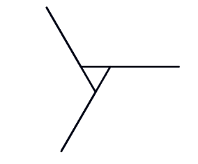
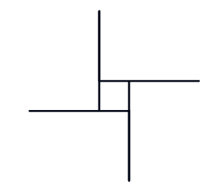
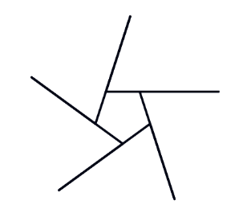
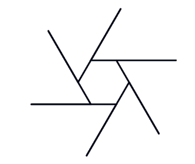
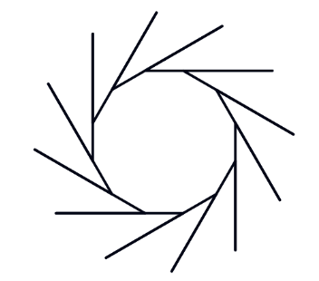
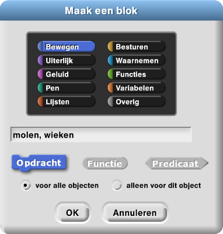
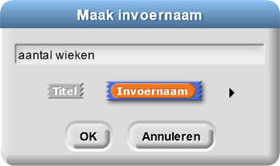
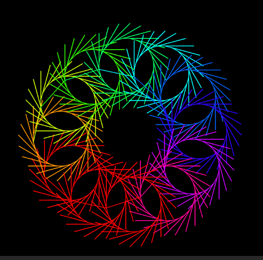
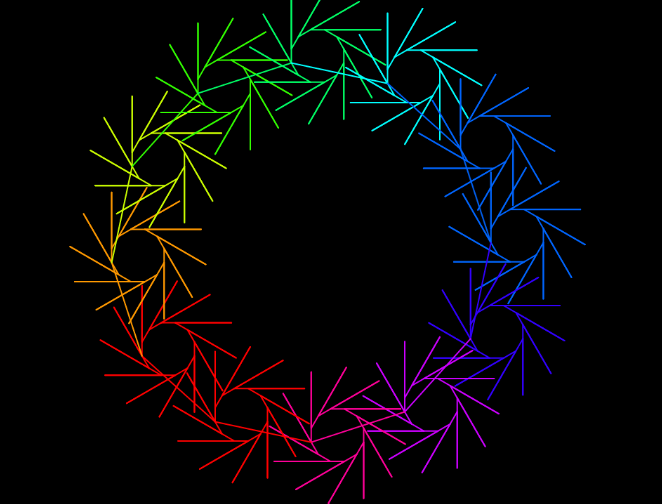
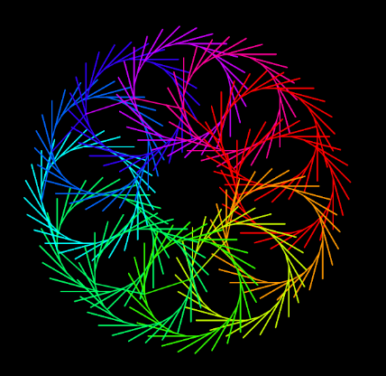

Blokken met invoer
Op deze pagina ga je verschillende plaatjes maken via een enkel blok
met een invoerveld
.
Invoervelden maken het mogelijk dat één blok meerdere verwante taken kan uitvoeren.
-

Maak 5 kopieën van dit script en pas ze zo aan dat de molens 3, 4, 5, 6 en 12 wieken krijgen.
    
De scripts zijn eigenlijk allemaal hetzelfde, alleen de invoerwaarde is anders. In plaats van veel verschillende scripts, kun je één algemener script maken dat ze allemaal kan tekenen. Je molen heeft een invoerveld nodig om aan te geven hoeveel wieken je wilt . Dit invoerveld werkt hetzelfde als de invoervelden voor de x- en y-waarden in het -blok.
 Bewaar je werk als: H1L3-Molen.
Bewaar je werk als: H1L3-Molen.
Debugtip: opmerkingen toevoegen aan je code
Het toevoegen van opmerkingen aan je code helpt om te onthouden wat je code doet. Het helpt ook anderen jouw
code te begrijpen. Daarnaast kan het helpen bugs te voorkomen, doordat je je code ermee verduidelijkt.
Dit filmpje laat zien hoe je opmerkingen in Snap! code toevoegt via een rechter-muisklik (of ctrl-klik)
op het werkblad van 'Blok bewerken'; daarna kun je kiezen voor 'opmerking toevoegen'.
Een opmerking die je toevoegt aan een kopblok, wordt trouwens ook gebruikt voor de helptekst van zo'n zelfgemaakt blok.
- Maak een
molenblok met een invoerveld voor het aantalwieken. Hoe je dat moet doen staat hieronder uitgelegd.
Bekijk eerst het filmpje, daarna volgt de uitleg.
Maak een blok met invoerveld
- Typ de naam van het blok en de naam van de invoer in het
dialoogvenster van 'Maak een blok…' en klik op OK. Typ in dit geval
molen, wieken
- Dit blok gaat over het bewegen van je sprite, je kunt er daarom voor kiezen dat dit blok in het blauwe Bewegen-palet komt. Als je geen palet kiest dan wordt je blok grijs.
- Het gebruik van komma's en dubbele punten is niet verplicht; ze staan er voor de duidelijkheid.
- Klik op het plusteken (+) achter de naam van je invoer en typ
hier de naam van je invoervariabele. Klik op OK om deze variabele invoer aan te
maken. Klik op de + na 'wieken:'' en typ
aantal_wiekenals de naam van je invoervariabele.
 - Sleep de blokken die je nodig hebt, en gebruik je nieuwe invoerveld:
- Gebruik een van je eerdere molen-scripts en sleep ze naar het venster waar je
je blok maakt. Maak het vast aan je
molenblok. - De invoer-naam , zoals het
aantal_wiekendat je bij de aanmaak van je blok definieert. Dit heet een parameter (of formele parameter). - De invoer-waarde, zoals 6 voor een zeshoekige molen, die je kan aanpassen voor je het blok uitvoert. Dit noemen we een argument (of actueel argument).
- Sleep vervolgens het nieuwe invoerveld
aantal wiekennaar de locaties die hieronder aangegeven staan om de getallen te vervangen. Op deze manier werkt het script voor ieder aantal wieken dat je maar invult voor de invoer.
We gebruiken het woord invoer voor twee verschillende maar verwante ideeën:
- Gebruik een van je eerdere molen-scripts en sleep ze naar het venster waar je
je blok maakt. Maak het vast aan je
- Voeg opmerkingen toe aan de code, zoals je hierboven leerde bij de Debugtip.
- Vergeet niet je werk nog
een keer te bewaren.
- Typ de naam van het blok en de naam van de invoer in het
dialoogvenster van 'Maak een blok…' en klik op OK. Typ in dit geval
- Deze plaatjes zijn gemaakt met het
molenblok enmaak_penkleur. Maak je eigen ontwerp op dezelfde manier.
   - Maak de animatie zoals boven aan deze pagina te zien is.